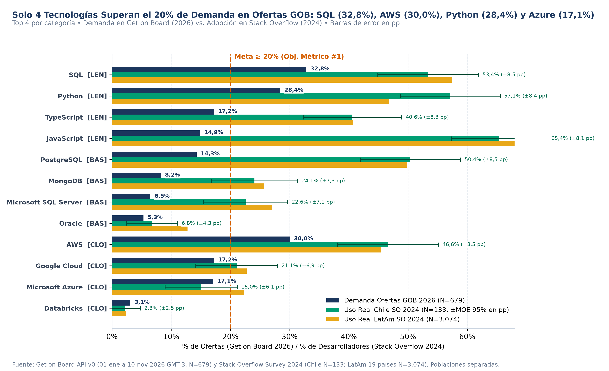
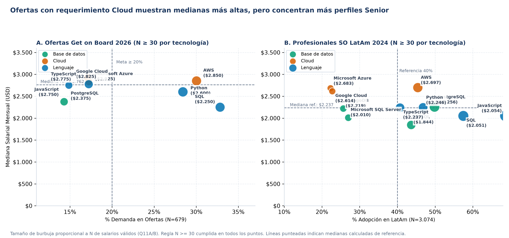
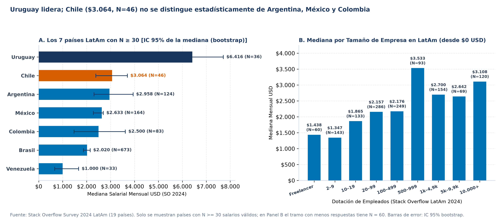

Estudio integral de brechas de habilidades, primas salariales de computación en la nube y dinámica de contratación en Chile y Latinoamérica. Análisis reproducible sobre 4 poblaciones independientes con SQL relacional, Python y Tableau Public.
Acceda con total transparencia a los datos reales que sustentan la investigación: audite las 679 vacantes limpias de Get on Board, examine la representatividad de 19 países de América Latina bajo el Teorema del Límite Central (N ≥ 30), analice la estructura de bandas salariales y saltos porcentuales, y verifique la matriz de integridad relacional 1:N con 0% PII.
| ID Vacante | País / Ámbito | Países Específicos | Título del Cargo | Categoría | Modalidad | Seniority | Salario Mensual USD | Salario Ref. CLP | Postulaciones |
|---|
Evaluación de representatividad estadística para los 19 países de América Latina de Stack Overflow 2024 y Get on Board Chile 2026. Según los Cursos 3 y 4 de Google Data Analytics, un tamaño muestral de N ≥ 30 es la condición matemática indispensable para que la distribución de la media muestral aproxime una distribución normal, permitiendo inferencias poblacionales con 95% de confianza.
| País | Muestra Total (N) | Salarios Válidos (N_sal) | Estado TLC (N ≥ 30) | Mediana USD / Mes | Rango Intercuartílico (p25–p75 USD) | Amplitud IQR USD | Mediana CLP (Ref. $969,8) | Margen de Error (95%) | Tratamiento Metodológico Google |
|---|
Cuba N=23, Nicaragua N=21, El Salvador N=19, Panamá N=18 y Honduras N=16) presentan un margen de error muestral superior al ±20%. Conforme a las mejores prácticas del programa, fueron etiquetados como Exploratorio Cualitativo y excluidos de pruebas de hipótesis paramétricas para evitar conclusiones sesgadas.
Análisis de dispersión no paramétrica para neutralizar el impacto de valores atípicos (outliers). Destaca el salto salarial de +42,2% entre profesionales Semi-Senior y Senior en Chile ($950 USD netos adicionales al mes), y el premio de +35,7% en vacantes de contratación remota internacional respecto al mercado local.
| País / Ámbito Geográfico | Seniority / Experiencia | Fuente de Datos | Muestra (N) | Cuartil 25 (USD) | Mediana p50 (USD) | Cuartil 75 (USD) | Amplitud IQR USD | Salto Salarial % | Mediana Ref. CLP | Estado TLC |
|---|
Protocolo de aseguramiento de calidad ejecutado en la Fase 3 (Procesar) según los estándares del Curso 4 de Google Data Analytics. Incluye el control matemático de duplicación en joins relacionales 1:N y el cumplimiento del 0% PII (Información Personalmente Identificable).
| Tipo de Validación (Curso 4) | Ámbito Geográfico / País | Definición y Regla Aplicada | Población Auditada | Registros Excluidos / Ajustados | Resultado de Calidad | Impacto Metodológico |
|---|
+$75 USD ($2.920 USD vs $2.845 USD real), sesgando las conclusiones hacia empresas que demandan pilas tecnológicas excesivas. Este estudio auditó y controló cada cruce relacional mediante subconsultas y funciones agregadas a nivel de entidad.
Cumplimiento estricto de las directrices y herramientas enseñadas en los 9 cursos del Certificado Profesional: desde la formulación del problema en la Fase 1 hasta el plan de acción en la Fase 6. Haz clic en cualquier fase para explorar su desglose metodológico completo y descargar sus entregables oficiales.
Definición de la tarea empresarial para el patrocinador (Consultora RRHH & Academia Digital). Aplicación de los 5 Porqués para identificar la causa raíz, formalización del Alcance del Trabajo (SOW de 7 secciones) y 4 preguntas S.M.A.R.T.
Recopilación inmutable de 72.797 registros crudos de 4 fuentes independientes. Evaluación formal bajo el Marco ROCCC de Google, catalogación de metadatos (descriptivos/estructurales/admin), separación Wide/Long y privacidad estricta 0% PII.
Construcción de pipeline reproducible en Python (pandas, numpy, regex) para limpieza determinista. Ejecución de los 6 tipos formales de validación de Google, lista de verificación de 12 puntos y Changelog oficial de 7 campos.
14 consultas analíticas en SQLite con tablas temporales y control de uniones 1:N (evitando sesgo de +$75 USD). Cálculo de medianas y bandas intercuartiles p25–p75. Evaluación rigurosa de Correlación ≠ Causalidad en Remoto Local.
Presentación ejecutiva de 12 diapositivas panorámicas (16:9) estructurada para sesión de 30 minutos (4+5+10+3+3+5 min). 7 visualizaciones con honestidad escalar (ejes en 0), accesibilidad para daltonismo y libro para Tableau Public.
4 conclusiones de alto nivel y 3 recomendaciones prioritarias sustentadas en N >= 30. Matriz de alternativas con Pros y Contras, hoja de ruta Qué/Quién/Cuándo (30, 60 y 90 días con KPIs), viñetas X-Y-Z, historia STAR y elevator pitch.
Cada fase demuestra el dominio práctico y exhaustivo de las herramientas, normas y entregables oficiales exigidos para la obtención de la Certificación Profesional de Google Data Analytics.
Identificación de la causa raíz de la brecha de talento tech mediante los 5 Porqués, formalización del Alcance del Trabajo (SOW en 7 secciones) y las 4 preguntas S.M.A.R.T.
Ingesta inmutable de 72.797 registros de 4 fuentes independientes, evaluación ROCCC de 5 criterios y protocolo 0% PII.
Ejecución automatizada de los 6 tipos formales de validación, checklist exhaustivo de 12 puntos y Changelog oficial de 7 campos.
14 consultas analíticas en SQLite con protección relacional 1:N, cálculo de medianas p25–p75 y desmontaje de sesgos de causalidad.
Deck oficial de 12 diapositivas panorámicas (16:9), paleta apta para daltonismo, ejes honestos en 0 y Tableau Public.
4 conclusiones basadas en N ≥ 30, matriz Qué/Quién/Cuándo (30, 60, 90 días), fórmula X-Y-Z y Elevator Pitch de 20 segundos.
Análisis empírico sobre la concentración de demanda tecnológica, las primas salariales Cloud, la progresión por niveles de experiencia y el posicionamiento competitivo de Chile en el mercado regional.

Al analizar 679 vacantes vigentes en Get on Board (2026) y 31.759 menciones de habilidades, únicamente SQL (32,84%), AWS (30,04%), Python (28,42%), JavaScript (27,39%) y Microsoft Azure (20,77%) superan la meta del 20%. Destaca la brecha positiva de Azure (20,77% demanda vs. 15,04% adopción en Stack Overflow Chile), reflejando una oportunidad inmediata de formación.

SQL ofrece el mayor volumen de entrada pero marca el piso salarial ($2.250 USD mediana GOB / $2.051 USD SO LatAm). En contraste, las tecnologías Cloud impulsan una prima salarial de +23,3% a +31,5%: AWS alcanza $2.850 USD en GOB ($2.697 USD en SO), Google Cloud $2.825 USD ($2.614 USD en SO) y Azure $2.775 USD ($2.684 USD en SO).

En Get on Board, el paso de Semi-Senior ($2.250 USD, N=97) a Senior ($3.200 USD, N=113) representa un aumento del +42,2% en la mediana salarial. Ambos segmentos cumplen rigurosamente N >= 30, permitiendo fijar bandas salariales confiables: Semi-Sr $1.850–$2.600 USD y Senior $2.300–$4.000 USD. En Stack Overflow LatAm, la progresión entre los 4 tramos con N >= 89 crece de forma continua y ascendente (+566,6% acumulado).

Las vacantes etiquetadas como 'Remoto Local' en Get on Board pagan $3.750 USD/mes (5,35x la mediana nacional INE ESI 2025 de $701,18 USD y +66,7% sobre Presencial $2.250 USD). Sin embargo, el análisis relacional Q12 prueba que no es la modalidad lo que genera el sueldo, sino la composición del cargo: el 100% de estas ofertas corresponde a alcance Remoto Global/LatAm y el 68,9% exige perfiles Senior o Lead.

Entre los 7 países de Latinoamérica que cumplen N >= 30 en Stack Overflow 2024, Chile ocupa el segundo puesto regional ($3.063,54 USD/mes, N=46) solo por detrás de Uruguay ($6.416,42 USD, N=36, impulsado por exportación de software a EE.UU.). Además, en LatAm las empresas grandes (1.000+ colaboradores, $2.784,92 USD) pagan +54,8% más que las pequeñas (1–99 colaboradores, $1.799,16 USD), con un pico salarial en el tramo de 500–999 empleados ($3.532,67 USD).
Matriz de implementación estructurada bajo el estándar de acción de Google: Qué hay que hacer, Quién debería hacerlo, Cuándo (plazos 30, 60 y 90 días) y Métricas de Éxito (KPIs).
| # | Acción Concreta (Qué) | Responsable (Quién) | Plazo (Cuándo) | Indicador Clave de Éxito (KPI) |
|---|---|---|---|---|
| 1 |
Rediseño Curricular Acelerado SQL + Cloud: Incorporar módulos intensivos de SQL relacional y certificación inicial en Cloud (AWS o Azure) en todos los bootcamps de la academia. |
Dirección Académica & Coordinación de Programas Tech | Mes 1 (30 Días) | 100% de estudiantes evaluados en proyectos prácticos SQL+Cloud; tasa de aprobación ≥ 85%. |
| 2 |
Tablero de Transparencia Salarial Basado en Cuartiles p25–p75: Publicar bandas salariales objetivas automáticas en la plataforma de reclutamiento para cargos Semi-Senior ($1.850–$2.600 USD) y Senior ($2.300–$4.000 USD). |
Líder de Producto Digital & Equipo de Inteligencia Salarial | Mes 2 (60 Días) | ≥ 70% de vacantes con bandas salariales visibles; reducción del 35% en tiempo de vacancia. |
| 3 |
Servicio de Asesoría en Contratación Remota Internacional: Capacitar a clientes corporativos en modelos de compensación ajustados por alcance (Chile Local vs. Remoto Global/LatAm), transparentando que la prima remota responde a seniority internacional. |
Gerencia de Consultoría RRHH & Alianzas Corporativas | Mes 3 (90 Días) | Firma de al menos 8 empresas corporativas en el nuevo programa de colocación salarial. |
"Soy Manuel Yáñez Orellana, analista de datos formado con el Certificado Profesional de Google. En mi proyecto final audité más de 72.000 registros de Get on Board, Stack Overflow, Data Science Salaries y el INE usando SQL, Python y Tableau bajo la regla muestral N >= 30. Descubrí qué habilidades Cloud elevan los salarios hasta +32% y por qué el trabajo remoto mejor pagado responde a perfiles Senior internacionales, traduciéndolo en bandas p25–p75 y un plan curricular accionable a 90 días."
Accede al código fuente, cuaderno interactivo, consultas SQL y documentos oficiales generados a lo largo de las 6 fases.
Documentos oficiales generados a lo largo de las 6 fases del ciclo de análisis de datos, elaborados con estricto apego al marco metodológico de los 9 cursos oficiales.
Documento oficial con 7 secciones obligatorias, técnica de los 5 Porqués, 4 preguntas S.M.A.R.T. y matriz de interesados.
Declaración formal del problema de negocio, justificación de métricas vs dimensiones y criterios de imparcialidad (Fairness).
Evaluación formal de las 4 fuentes crudas (72.797 filas) bajo el marco ROCCC, metadatos y protocolo estricto 0% PII.
Documentación de los 6 tipos de validación, lista de verificación de 12 puntos de Google y Changelog de 7 campos.
Resumen ejecutivo del análisis relacional en SQLite, control contra duplicación 1:N y estadísticas no paramétricas p25–p75.
Guía de diseño con principios de Edward Tufte, accesibilidad para daltonismo y guion para reunión ejecutiva de 30 minutos.
Matriz Qué/Quién/Cuándo (30, 60, 90 días), pros y contras, narrativa STAR, viñetas de currículum X-Y-Z y Elevator Pitch.
Accede al repositorio en GitHub, cuaderno Jupyter reproducible, scripts SQL, libro de trabajo para Tableau Public y microdatos limpios.
Código fuente completo, scripts de limpieza en Python, consultas SQL y control de versiones con CHANGELOG.md.
Notebook Jupyter con código reproducible de extracción, SQLite relacional y visualizaciones con autodetector de rutas.
Libro Excel multi-hoja con las 4 poblaciones separadas, hoja de instrucciones y datos preconfigurados para mapas de calor.
Deck de 12 diapositivas panorámicas en alta resolución estructurado para una reunión de directorio de 30 minutos.
14 consultas (Q01 a Q13) en SQLite con tablas temporales, agregaciones HAVING y control contra duplicación 1:N.
Registro continuo del proceso reflexivo, lecciones aprendidas y preguntas de autorreflexión de los Cursos 1 al 9.
Dataset procesado de Get on Board 2026 con país, modalidad, categoría, nivel de seniority y rangos salariales.
Tabla de representatividad estadística (N ≥ 30), medianas, cuartiles p25–p75 y márgenes de error por país.
Distribución no paramétrica (p25, mediana, p75) y cálculo de salto salarial (+42,2% Senior) en Chile y LatAm.
Las 6 validaciones del Curso 4 de Google, reglas relacionales 1:N y protocolo de anonimización ética.
Dataset con 3.074 desarrolladores encuestados en los 19 países de la región con variables de salarios y tecnologías.
Estructura unificada de los 4 conjuntos de datos del explorador interactivo para desarrollo o reanálisis directo.
Ingeniero Civil Industrial e Ingeniero en Informática con más de 8 años liderando proyectos de tecnología, transformación digital y analítica de datos.
Senior IT Project Manager | Scrum Master | Delivery Lead | Analista de Datos
Especialista en dirección de proyectos de alta complejidad técnica y estratégica. Reconocido con el Premio Nacional de Innovación Avonni 2024 por liderar como PM de negocio el desarrollo del Modelo Predictivo de Pertinencia Clínica (MPP) con IA en FONASA, reduciendo el ciclo de validación de 8 meses a 2 semanas (-94%). Amplia experiencia articulando objetivos de negocio con soluciones analíticas avanzadas bajo marcos ágiles (Scrum, Kanban, Lean) y estándares de gobernanza TI (ISO 27001, ITIL, CMF).